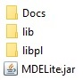

MDELite Installation and Overview Manual
Don BatoryDepartment of Computer ScienceThe University of Texas at AustinAustin, TX, USA
MDELite is an alternative to Eclipse for teaching and exploring concepts in Model Driven Engineering (MDE). Rather than:
- Storing models and metamodels as obscure XML documents, MDELite encodes them as readable relational database text files;
- Using Object Constraint Language (OCL) to express constraints, MDELite uses relational algebra operations written in Java;
- Writing Model-to-Model (M2M) transformations using customized MDE languages, again MDELite relies on relational algebra operations written in Java; and
- Using yet another language/tool for Model-to-Text (M2T) and Text-to-Model (T2M) transformations, MDELite again relies on Java.
Here is an overview of this manual:
Installation of MDELite
You can download MDELite from http://www.cs.utexas.edu/users/schwartz/MDELite/index.html. The MDELite directory and executable contains:
|  | - Docs -- documentation, including this manual,
- lib -- a library of jar files needed by MDELite,
- libpl -- a library of predefined schemas, and
- MDELite.jar -- the MDELite jar.
|
To install MDELite, just place MDELite.jar on your CLASSPATH. In Windows, the incantation to do so is:
> set CLASSPATH=%CLASSPATH%;C:\xfer\dist\MDELite.jar
where C:\xfer\dist is the absolute path to the directory containing MDELite.jar. To check to see if you did the above tasks correctly, run the program MDL.VerifyInstall:
Violet should be running now.
If not, something is wrong.
Otherwise, please close Violet,
and MDELite Ready to Use!
MDELite-Relational Schemas
In MDE-speak, a model conforms to a metamodel. In MDELite-speak, a metamodel is a relational schema; a relational database is a model that conforms to its schema. (There are constraints that are associated with a database schema, which we cover later in Tools. MDELite allows you to outline a relational schema in a way inspired by Prolog facts. Here is a typical `short' declaration in school.ooschema.pl:
dbase(school,[person,professor,department,student]).
table(person,[id,"name"]).
table(professor,[deptid]).
table(department,[id,"name","building"]).
table(student,[utid]).
subtable(person,[professor,student]).
The above means:
- The name of this schema is school. It contains four tables: person, professor, department, student;
- Every table has a name and a list of columns (attributes). The person table has two attributes: id and ``name''; and
- Tables can be arranged in an inheritance hierarchy. The subtable declaration says classes professor and student are subtables of person.
Three important conventions used in MDELite are:
- The first attribute of every MDELite table is an identifier column whose name need not be `id';
- There are two kinds of fields in MDELite table schemas: those with unquoted attribute names and those with quoted names. A quoted-name field means that all of its values must be quoted (single-or-double); an unquoted-name field means that all of its values must be unquoted;
- An n-tuple of a table t is written as a prolog fact: t(v1 ... vn). Some person tuples might be:
person(p1,'Don').
person(p2,'Barack Obama').
person(p3,"Ms Piggy").
Values of a tuple are listed in the order that their column/attributes are listed in their table definition.
MDELite actually uses a more elaborate definition of a schema. You can produced this schema by running:
> java MDL.OO2schema school.ooschema.pl
(silently produces school.schema.pl)
> type school.schema.pl
Person name not capitalized: don
Person name not capitalized: kelly
Person name not capitalized: zeke
The only difference between an .ooschema file and its .schema counterpart is that attributes of super-tables are propagated to its sub-tables, recursively. Above, every professor tuple and every student tuple will have person attributes.
Finally, a new addition has been added to TableSchemas. Attributes can not only have names, but be given "type" indicators (as in the name of the Table whose identifiers they are to contain). So instead of schemas like:
Table(Person,[id,name,worksin]).
Table(Department,[id,name]).
Where you have to infer that worksin is a field that points to a Department tuple, you can now write:
Table(Person[id,name,worksin:Department]).
Table(Department,[id,name]).
To remind you that worksin takes Department ids as its column value. MDELite does nothing with this information,, but maybe someday some automated checking can be done.
MDELite-Relational Databases
A MDELite database is an instance of a .schema.pl file. Recall the school.schema.pl of the previous section. An instance of this database is a separate file, named my.school.pl, where 'my' is the name of the instance, 'school' is the schema, and 'pl' denotes an MDELite file. Here is the my.school.pl database text file:
dbase(school,[person,professor,department,student]).
table(person,[id,"name"]).
table(professor,[id,"name",deptid]).
professor(p1,'don',d1).
professor(p2,'Robert',d1).
professor(p3,'Lorenzo',d2).
professor(p4,'kelly',d3).
table(department,[id,"name","building"]).
department(d1,'computer science','gates dell complex').
department(d2,'computer science','gates hall').
department(d3,'computer science','Bahen Centre').
table(student,[id,"name",utid]).
student(s1,'zeke','zh333').
student(s2,'Brenda','UTgreat').
student(s3,'Thomas','astronaut201').
subtable(person,[professor,student]).
The above means:
- The student table has 3 tuples, department has 3 tuples, and professor has 4.
- Table person has 0 (no) explicit tuples. This is like Java: objects/tuples are listed for the class/table in which they were created. The tuples of person is the union of the tables of it and its subtables.
- The database schema definition is always included in a database file (that's the dbase fact).
- The schema definition for each table is always included in a database file (that's the table facts).
- The tuples of the table follow (not necessarily immediately) after its table fact. An absence of tuple declarations says the table is empty
MDELite does not automatically ensure that schema declarations of the database match that of the corresponding .schema file. So beware. MDELite has a tool that verifies (or reports differences) between a database schema and its database. To verify that the my.school.pl database conforms to school.schema.pl, run the instanceOf tool below. In this case, conformance holds as there is silence for output.
>java MDL.instanceOf my.school.pl school.schema.pl
MDELite Tools
MDELite offers the following tools, some of them are listed below:
All
Lists the MDELite tools, like the above.
> java MDL.All
InstanceOf
Verifies that a database is an instance of its schema. We saw a use for this operation earlier. To invoke this test, use the incantation below. Silence is returned if there are no errors.
> java MDL.InstanceOf
Usage: MDL.InstanceOf S.schema.pl Y.S.pl
confirms that database Y is an instance of S
Catalina
Tool that bootstraps (generates) MDELite tools from a Violet Class Diagram specification.
> java MDL.Catalina
Usage: Boot.MDELite.catalina option args...
all state -> meta,java
validateViolet state -> T/F
validateMeta state -> meta
quick meta -> java
Conformance
MDELite relies on you writing a Java program (typically using Java streams and MDELite-tool support) to write and evaluate constraints and to report errors. (OCL is an awkward stream language IMO; Java streams are more elegant). Here are two constraints on the school daitabase:
- Person Name Constraint: A Person's name must begin with a capital letter.
- Name Uniqueness: No two Persons have the same name
A typical outline of schoolConform.java is sketched below.
package BuildDocumentation;
import PrologDB.*;
public class schoolConform {
public static void main(String... args) {
// Step 1: standard command-line processing
MDELite.Marquee4Conform mark = new MDELite.Marquee4Conform(schoolConform.class, ".school.pl", args);
String inputFileName = mark.getInputFileName();
String AppName = mark.getAppName(inputFileName);
// if "X.school.pl" is input database name
// then AppName = "X"
// Step 2: open database to be validated + get needed tables
DB db = DB.readDataBase(inputFileName);
Table person = db.getTableEH("person");
ErrorReport er = new ErrorReport();
// Step 3: now perform database checks
// Person Name Constraint
person.filter(t -> checkCharacter(t))
.forEach(t -> er.add("Person name not capitalized: %s", t.get("name")));
// Name Uniqueness Contraint
person.filter(t -> person.filter(g -> g.get("name").equals(t.get("name"))).count() > 1)
.forEach(t -> er.add("Persons with duplicate name : %s" + t.get("name")));
// print error report
er.printReport(System.err);
}
static boolean checkCharacter(Tuple t) {
String n = t.get("name");
if (n.length() == 0) {
return true;
}
Character c = n.charAt(0);
return Character.isLowerCase(c);
}
} Perhaps the only thing strange is the use of class ErrorReport. An ErrorReport object maintains a list of errors that are posted to it. When a report is printed and if at least one error was found, a RuntimeException is thrown. Incidentally, the output of this program is:
Person name not capitalized: don
Person name not capitalized: kelly
Person name not capitalized: zeke
For further details see the MDELite Constraint document.
Model to Model (M2M) Transformations
A M2M transformation in MDELite is a Java program that implements a database-to-database transformation. It imports MDELite tools to read and write MDELite schemas and databases. Typically, although not required, it takes 2 arguments: the name of the input database file and the name of the output database file. Beyond that,how you write your database-to-database transformation is up to you.
For further information see the MDELite Demo document.
OOSchema
This tool reads an input x.ooschema.pl file and converts it to a schema file x.schema.pl. Remember an ooschema file is a Java-like declaration of tables and their inheritance hierarchies. The attributes of a table are only those that are specific to that table. Flattening this schema propagates attributes of supertables to subtables. It is not difficut, but is error-prone. We saw an example use of earlier:
> java MDL.OO2schema
Usage: MDL.OO2schema X.ooschema.pl [X.schema.pl]
translate X.ooschema.pl to X.schema.pl
1st argument must conform to format X.ooschema.pl
if 2nd argument is absent, output file is X.schema.pl
Reading a Database
This tool reads a database and reports errors. If there are no errors, silence is returned:
> java MDL.ReadDB
Usage: MDL.ReadDB X.pl
Reading a Schema
This tool eads a schema and reports errors. If there are no errors, silence is returned:
> java MDL.ReadSchema
Usage: MDL.ReadSchema ..pl
is 'ooschema' or 'schema'
reads schema x and reports errors
Reading a Table
This tool reads a prolog/MDELite table (.pl) or Comma-Separated-Value (.csv) table:
> java MDL.ReadTable
Usage: MDL.ReadTable .
is .csv or .pl
reads table and reports errors
Verify Install
Used to verify that you have installed MDELite correctly, and was used earlier. The incantation is:
> java MDL.VerifyInstall
Violet should be running now.
If not, something is wrong.
Otherwise, please close Violet,
and MDELite Ready to Use!
Version
Returns the version number of MDELite:
> java MDL.Version
MDELite version 7.18s
Violet and its MDELite Tools
You can invoke Violet directly through its jar file, but calling it from a command line is painful; MDL.Violet is easier:
> java MDL.Violet // spawns Violet and waits for Violet to close
Please note: MDELite uses Violet version 1, NOT version 2. Why? Because Version 2 made the use of Violet significantly harder.
MDELite has a host of tools using Violet, including parsers, unparsers, and conformance tools for Violet class diagrams and Violet State Diagrams. The incantations for class diagram tools are below; their counterparts are no different for State diagrams.
More information on Violet can be found in the Violet Manual. Comparable tools for Yuml, another UML drawing tool, are also available.Violet Class Parser
Maps a Violet Class diagram file (in file X.class.violet) to a vpl database. The vpl schema is in libpl/vpl.schema.pl and is shown below:
% Violet (vpl) class database
dbase(vpl,[vBox,vAssociation]).
% type = c(class),i(nterface),n(ote). packages are skipped
table(vBox,[id,type,"name","fields","methods",x,y]).
% type1,type2 = c(lass) or i(nterface)
% lineStyle = ""(solid) or "DOTTED"
% arrow1,2 = V, TRIANGLE, DIAMOND, BLACK_DIAMOND
% bentStyle = "", HV, VH, HVH, VHV
table(vAssociation,[id,cid1,type1,"role1","arrow1",cid2,type2,"role2","arrow2","bentStyle","lineStyle","middleLabel"]).
To invoke the parser:
> java Violett.ClassParser
Usage: Violett.ClassParser X.class.violet [X.vpl.pl]
translate X.class.violet to X.vpl.pl
1st argument must conform to format X.class.violet
if 2nd argument is absent, output file is X.vpl.pl
Violet Class UnParser
Maps a vpl database (file X.vpl.pl) to a Violet Class diagram file (X.class.violet):
> java Violett.ClassUnParser
Usage: Violett.ClassUnParser X.vpl.pl [X.class.violet]
translate X.vpl.pl to X.class.violet
1st argument must conform to format X.vpl.pl
if 2nd argument is absent, output file is X.class.violet
Violet Class Conform
Validates a X.vpl.pl database:
>java Violett.ClassConform
Usage: Violett.ClassConform X.vpl.pl
evaluate conformance rules on X.vpl.pl
silent return indicates no errors
Violet State Tools
Use the following schema to store database encodings of Violet state diagrams -- taken from libpl/fsm.schema.pl:
% violet (fsm) state machine database
dbase(fsm,[node,edge]).
% ntype = state | note | init | final | point
% etype = arrow | note
table(node,[nid,ntype,"text","color",xpos,ypos]).
table(edge,[eid,etype,"label",startid,endid]).
The StateParser, StateUnparser, and StateConform tools have exactly the same calling sequence as their Violet Class counterparts, except the "Violett.State.." program is used.Yuml and its MDELite Tools
Yuml is a free, on-line tool that MDELite uses. The ypl schema that is used to encode Yuml databases is in libpl/ypl.schema.pl:
% yuml class schema
dbase(ypl,[yumlBox,yumlAssociation]).
% type = n (for note), c (for class), i (for interface)
table(yumlBox,[id,type,"name","fields","methods"]).
% end1 = <> | ++ | ^ | < | "" (nothing)
% end2 = <> | ++ | ^ | > | "" (nothing)
% lineType = - | -.-
table(yumlAssociation,[id,box1,"role1","end1","lineType",box2,"role2","end2"]).
The ClassParser, ClassUnparser, and ClassConform tools have exactly the same calling sequence as their Violet Class counterparts, except the "Yuml.Class.." program is used. More information is found in the Yuml Manual.Closing
MDELite is a work in progress. It is possible that this documentation may get out-of-date with code releases. If so, please report them to me .